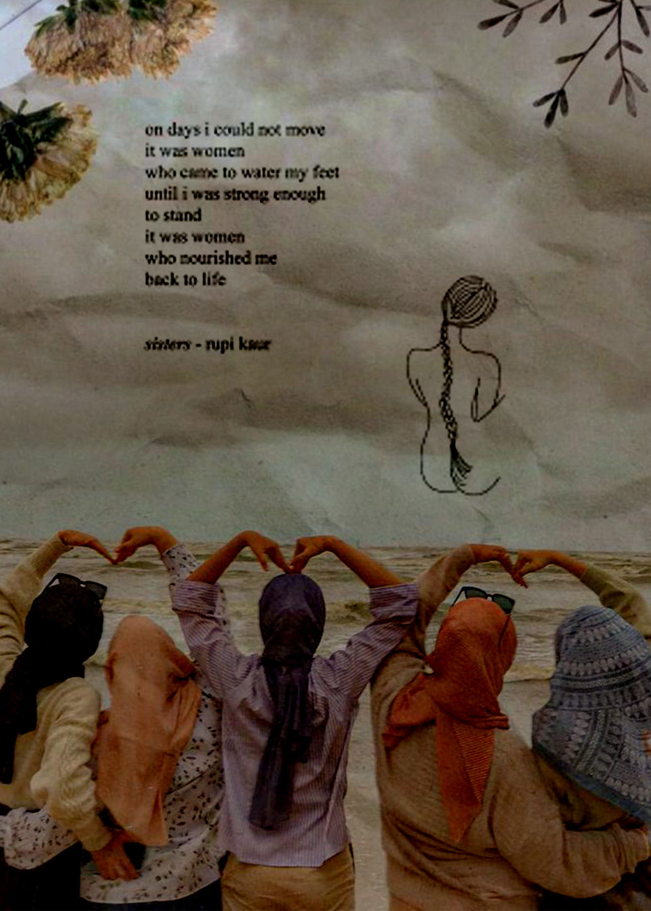

The purpose of this collage is to represent how identity is constantly evolving and adapting. I wanted to explore the feeling of existing between two cultures — being connected to both yet not fully belonging to either. To show this, I used layering and opacity effects to blend images from both my Bangladeshi background and my life in the U.S. The collage includes photos of traditional foods and clothing overlapping with modern city scenes and everyday life here. The fading transitions represent how the two sides of my identity coexist rather than compete. I used the brush and blending tools to emphasize fluidity and movement between the images, symbolizing personal growth and cultural harmony.
